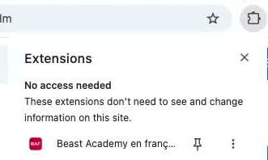

Lisez Beast Academy en français
Survolez une consigne ou une bulle en anglais pour afficher sa traduction. Cliquez sur le texte pour garder la traduction ouverte.
Chrome 138+
Firefox 153+
Pour une fiche imprimable, consultez le lexique mathématique anglais–français non officiel pour Beast Academy (PDF).
How many dots are in each row?
Combien y a-t-il de points dans chaque rangée ?
Installer l’extension
Tutoriel d’installation dans Chrome
Vidéo sans son. Les étapes sont détaillées ci-dessous.
La vidéo et les captures d’écran montrent Chrome en anglais.
-
Ouvrez la fiche de Beast Academy en français dans Chrome sur votre ordinateur, puis cliquez sur Ajouter à Chrome.

-
Cliquez sur Ajouter l’extension dans la fenêtre de confirmation de Chrome.

-
Cliquez sur le bouton Extensions en forme de pièce de puzzle, à côté de la barre d’adresse. Cliquez sur l’épingle à côté de Beast Academy en français pour garder l’icône rouge BAF
 dans la barre d’outils.
dans la barre d’outils.

Installation manuelle dans Chrome
- Téléchargez le ZIP pour Chrome (version @@VERSION@@) et décompressez-le.
- Ouvrez
chrome://extensionsdans Chrome sur votre ordinateur et activez le Mode développeur. - Cliquez sur Charger l’extension non empaquetée et sélectionnez le dossier décompressé qui contient
manifest.json.
Installation temporaire dans Firefox
- Téléchargez le ZIP pour Firefox (version @@VERSION@@) et décompressez-le.
- Dans Firefox sur votre ordinateur, saisissez
about:debugging#/runtime/this-firefoxdans la barre d’adresse. - Cliquez sur Charger un module complémentaire temporaire… et sélectionnez
manifest.jsondans le dossier décompressé. - Ouvrez une leçon Beast Academy et choisissez Beast Academy en français dans le menu Extensions. À la première utilisation, choisissez Allow and translate (« Autoriser et traduire »).
Après avoir redémarré Firefox, chargez de nouveau manifest.json depuis le même dossier.
Utiliser l’extension
Traduire un exercice
-
Ouvrez un exercice dans votre classe Beast Academy ou essayez l’exercice de démonstration public. Cliquez sur BAF dans la barre d’outils. À la première utilisation, lisez l’avis de confidentialité et choisissez Allow and translate (« Autoriser et traduire »).

- Si Chrome le demande, cliquez sur Préparer la traduction pour charger le modèle de langue. Gardez la fenêtre de l’extension ouverte jusqu’à la fin de l’analyse.
-
Survolez une consigne en anglais pour voir sa traduction. Cliquez sur le texte pour garder la traduction ouverte ou appuyez sur Échap pour la fermer.

Traduire une leçon dans le livre
- Cliquez sur l’icône du livre au-dessus de l’exercice de démonstration pour ouvrir la leçon. Cliquez sur BAF, attendez la fin de l’analyse, puis survolez une bulle.
-
Faites défiler le livre jusqu’au passage suivant. BAF analyse uniquement le contenu visible. Cliquez de nouveau sur BAF chaque fois que vous faites défiler le livre pour afficher du nouveau texte.

Après le défilement, avant de relancer l’analyse. -
Attendez la fin de l’analyse, puis survolez une bulle qui vient d’apparaître pour la lire en français. Répétez l’opération après avoir fait défiler le livre ou changé de page.

Après la nouvelle analyse et l’affichage de la traduction.
L’extension s’utilise avec votre accès Beast Academy habituel. Elle traduit le texte visible des exercices et des livres, y compris celui des illustrations. Les captures d’écran et le texte des leçons restent sur votre appareil.